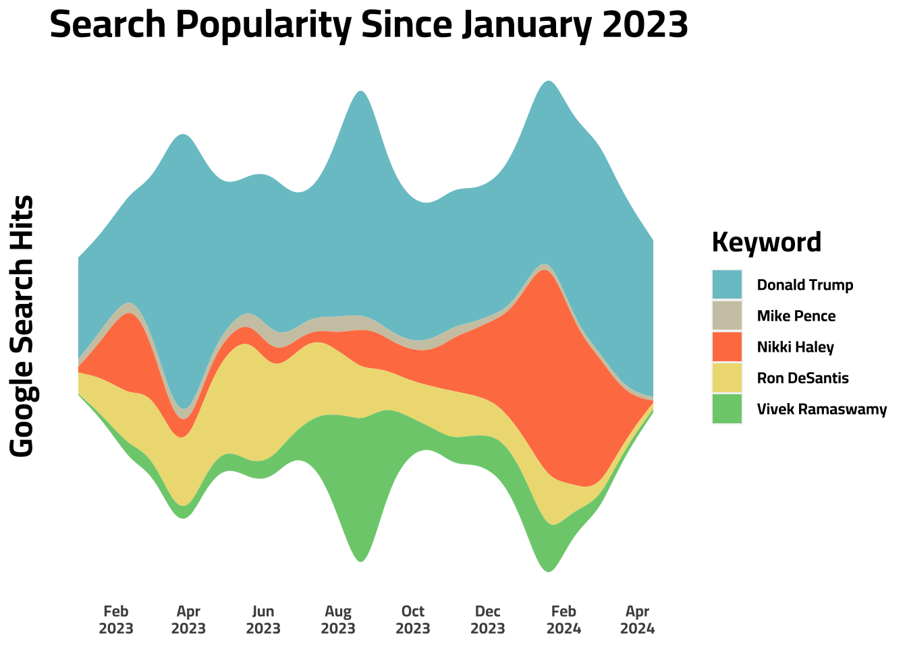

Primary Nomination Tracking with Google Trends and Stream Graphs
Google Trends
Data Journalism
Politics
CICD

Introduction
Yes, I guess I’m on a bit of a google trends kick lately. The more I look into searches, the more I’m impressed by the interesting and vast amount of data avaiable.
For example, i recently learned that Google Trends is quite effective in predicting large elections here and here. I even went through the exercise of looking myself at the last 5 US elections. Excluding the 2020 election, the winning candidate had more search volume months leading up to the elections. The trend did not hold for Trump’s last election, but maybe we chalk that up to Trump being a peculiar candidate or 2020 being a peculiar year.
Honing in on the GOP Primary Nomination
My thought was that if Google Trends can be effective for US Presidential Elections, what about Primaries? Instead of diving into the past, I thought I would make one tracking the race right now, and worry about that other stuff later.
To visualize the race, I wanted to make a stream chart for two reasons:
- You can see the relative importance each candidate has to one another given by vertical distance of each color at a given point in time.
- You also get a sense of the total search volume of all candidates given by the vertical distance of all colors at a given point in time. I plan to keep this chart updated up until the primary election. I guess we‚Äôll see how accurate it is in the end ü§∑‚Äç‚ôÇÔ∏è.
Note
This graph is updated on a daily basis to provide continuous context to the GOP Primary Election. This graph was last updated: 12:27:02 on 13 Sep 2023
Observation 1
For these charts like other Google Trends data, its helpful to read the spikes. For example, we can see different candidates spiking at different times. Nikki Haley spikes in mid-February then dies down. Trump spiked in April. Tim Scott both spiked in June, and Ron DeSantis seems to be growing as of mid-July.
Observation 2
Overall, it seems like Trump is taking the lionshare of hits. DeSantis is the next closest person. Then, after that, the others have few searches relatively.
Tip
I expect the graph to look more and more like a funnel as the primary nomination approaches and more people search these candidates, but we‚Äôll see üëÄ

Note
This graph is updated on a daily basis to provide continuous context to the GOP Primary Election. This graph was last updated: 12:27:12 on 13 Sep 2023
This graph is provided to give a barometer reading of a candidates recent popularity/news coverage.
As of the time of me writing this, the bar chart below looks very similar to polling aggregator predictions for the primary elections. Trump and DeSantis are pretty close together at around 40% each of the web search share with the others trailing behind. I expect this to change quickly with the pattern of the news cycle.
Could Google Trends function similar a polling aggregator?
From reading through those two research papers linked above to comparing the primary polling aggregator with the presidential one, it seems plausible that google trends data could function similar to a polling aggregator showing us who the most popular candidates are.
For one of my next project, I am planning on one of two things:
- Building an election model and from my analysis with this google trends data, I am convinced that it could be a useful predictor of an election result in a model.
- Analyzing how google search trends perform in every congressional election since 2004.
Feel free to leave share comments/thoughts below üôÇ